1. Biodiversity patterns
2. Diversity through time and the fossil record
3. Extinction and conservation
Has diversity increased or decreased?
Are there limits on diversity? What does this mean?
What is the correct unit to quantify diversity? What are the pitfalls
of using alternative units?
How many eukaryotic species exist today? How can we quantify it? How accurate are estimates?
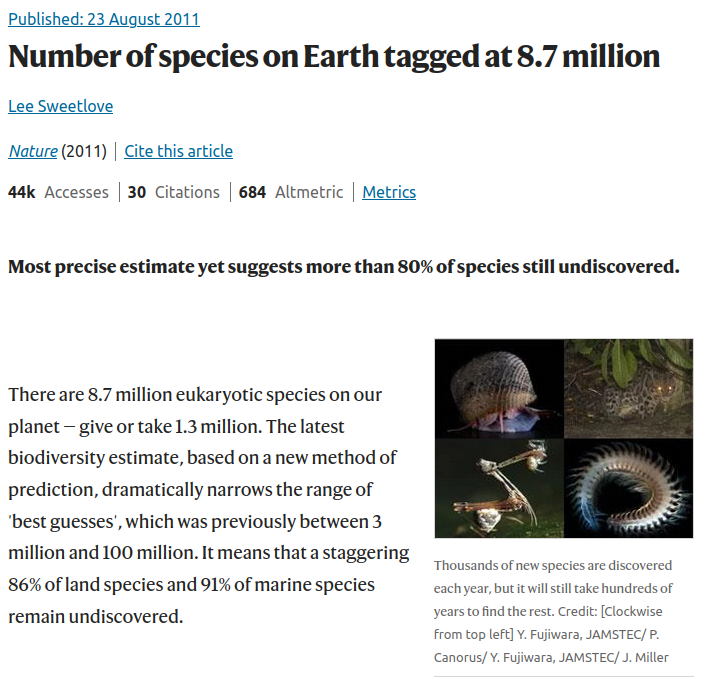
What about the number of genera, or families?
Biogeographic realms: taxonomic groups are more uniform within than between
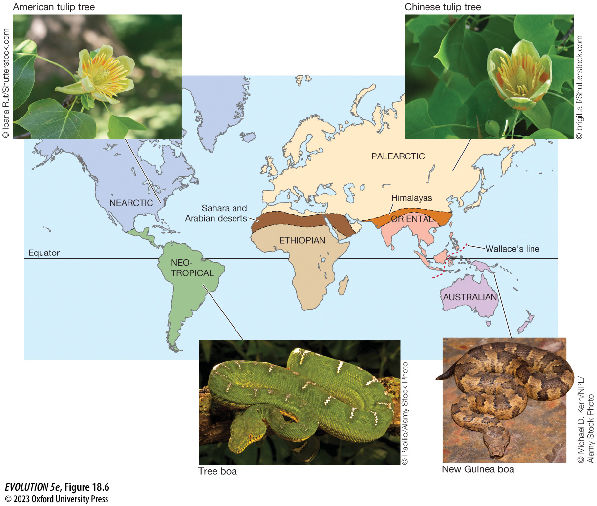
"Sometimes it is easier to move than to evolve"
Diversity in a region can change by Dispersal, Speciation, and Extinction
Speciation and/or extinction has been higher in some regions than others
Dispersal has been greater between some regions than others
Regions (continents or biomes) have not been static through time!
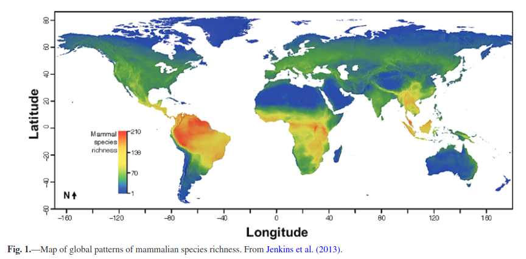
To explain current diversity patterns such as the LDG
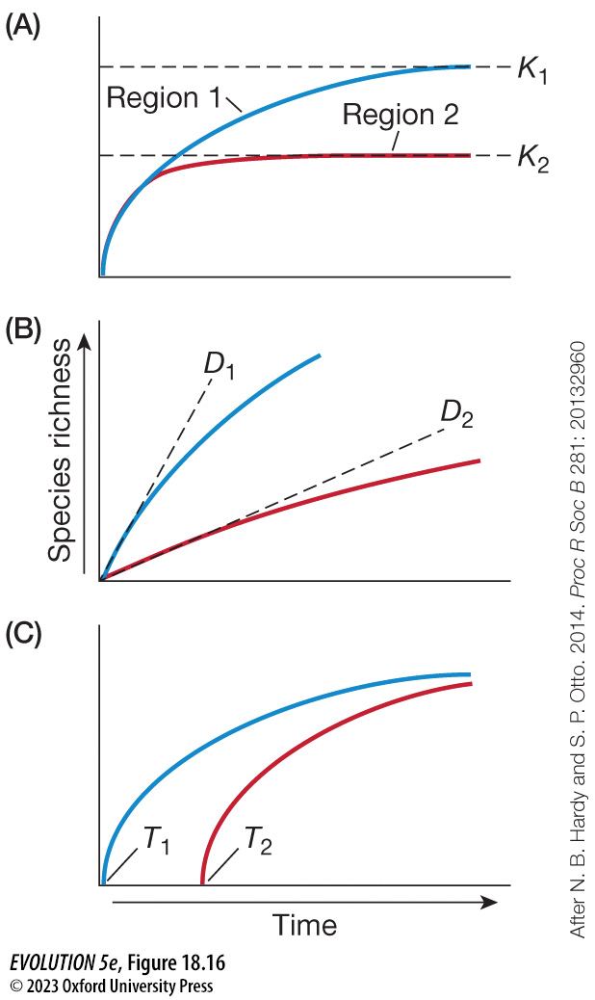
"Mountain passes are higher in the tropics" (Jansen 1967)
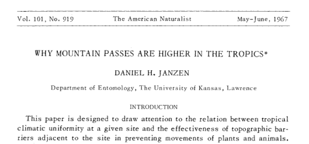
Species in lowland tropical environments experience a narrower range of temperature than those in temperate regions and this results in the evolution of greater physiological specialization and reduced opportunity for dispersal across unfavourable climatic regions (higher speciation).
Rohde (1978, 1992) proposed that biodiversity peaks at the equator due to the kinetic effects of environmental temperature on rates of biological processes. Mechanistically, this "evolutionary speed" hypothesis links biodiversity to temperature through its effects on mutation rates and generation times of individuals which, in turn, lead to faster rates of genetic divergence among populations, and higher rates of speciation in communities
Schemske (2002) suggested that natural selection in tropical populations is mainly due to geographical differences in the pattern and magnitude of species interactions, and could thus promote the rapid evolution and coevolution of adaptations, and ultimately speciation (similar to Red Queen).
Fine and Ree (2006) propose that tropics have existed larger and longer.
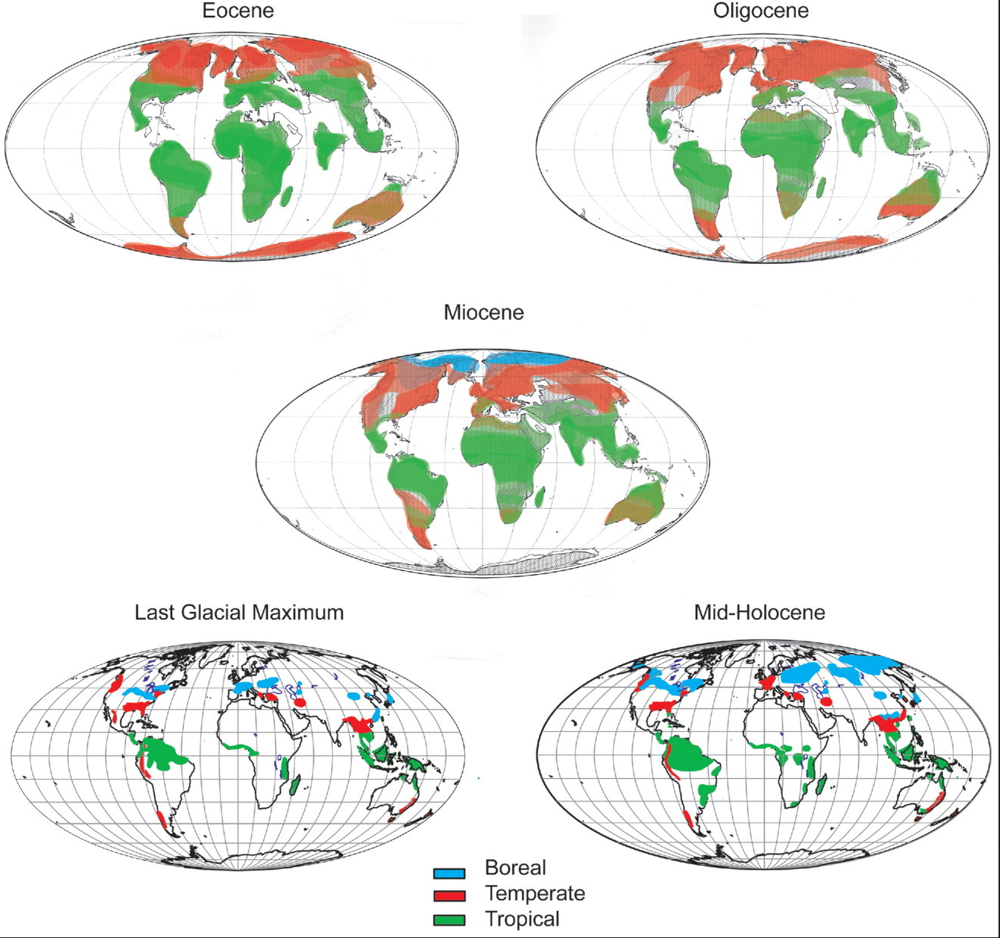
Is the tropics a museum or cradle? Maybe more of a museum
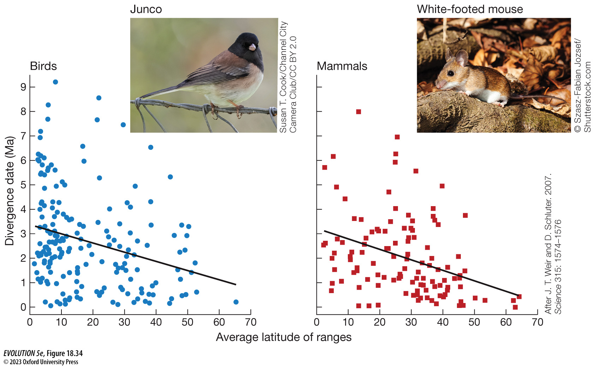
For decades geologists debated whether diversity was at a steady
state through most of paleohistory, or if it has shown directional
trends.
Precise pattern of taxonomic diversity through geologic time remains a subject
of debate, but it is broadly accepted that diversity was lower during the
Paleozoic and early Mesozoic, and increased substantially in the past hundred
million years (Signor 1990).
The period of greatest taxonomic diversification in the Earth's history was
during the Pliocene and Pleistocene (5-2Mya), prior to climatic
fluctuations and human impacts that caused large-scale extinction.
While _patterns_ of taxonomic diversity through time have become broadly
agreed upon, the processes underlying those patterns, and their
ultimate causes, are another matter of debate.
Many physical and biological processes likely influenced diversification,
including continental drift, changing sea levels, mass extinctions,
evolutionary innovation, and others.
The marine fossil record is greatly superior to that of terrestrial plants and animals. Why is that?
Many environments, especially terrestrial habitats, lack any
significant sedimentation or are dominated by erosion. Most fossils
form after being buried. In oceans, a constant flow of sediment
covers dead organisms, where low oxygen also prevents slow decay.
Even the marine record includes only a small fraction of the species that have existed in the geological past. It is estimated that ~1-10% of extinct skeletogenous animals are represented in the fossil record, composing mostly shallow water benthic species that construct durable, heavily mineralized skeletons. How do we know this?
In the modern oceans, species that possess heavily mineralized skeletons
constitute only ~30% of benthic communities, and based on rare fossil beds
that preserve soft tissues well, this number is estimated to have been even
lower in the paleozoic.
The dominant factor determining long-term variation in the taxonomic
diversity of marine organisms is the arrangement of continental land masses
on the earth's surface.
When the continents are gathered into a single land mass there are
few distinct provinces. Land masses restrict the ability of marine organisms
to disperse or migrate, depending upon their position, especially when the
continents interrupt east/west currents.
Similarly, dispersed land masses allow the independent evolution of terrestrial
faunas and floras, such as the unique biotas of Australia or Madagasgar (or
South America prior to the formation of the Central American land bridge)
The number of provinces was uniformly low during the Paleozoic and early
Mesozoic, and peaked in the Recent era.
Raup and Sepkoski (1982) constructed the first massive-scale dataset of marine fossils and applied statistical methods to estimate patterns of diversity and extinction through time. Diversity of Marine animal families through time.
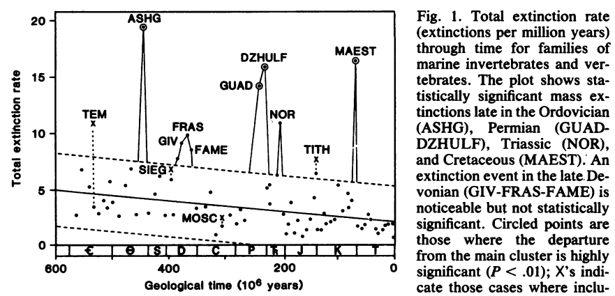
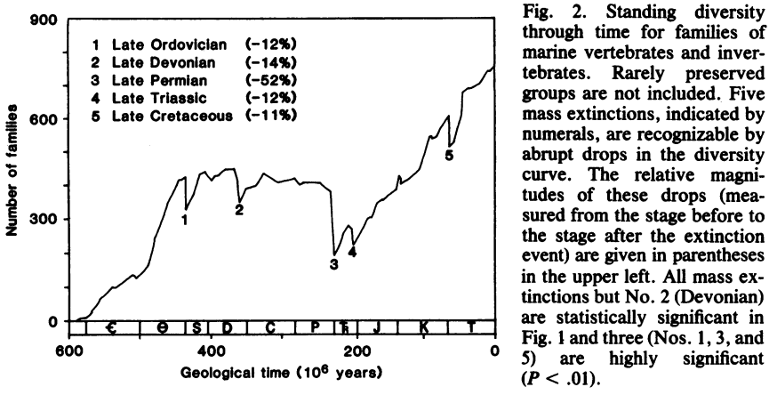
Overall diversity in terms of the number of families or genera has
increased throughout the Phanerozoic (Cambrian to now).
There have been 4-5 mass extinction events that vary significantly
from the background rate of extinction: O, P, T, K, (maybe D).
The background extinction rate has decreased through time. An increase
in speciation rate is not necessary to explain this increase in
diversity. Raup and Sepkoski ask: Does this represent an "optimization of fitness through time"?
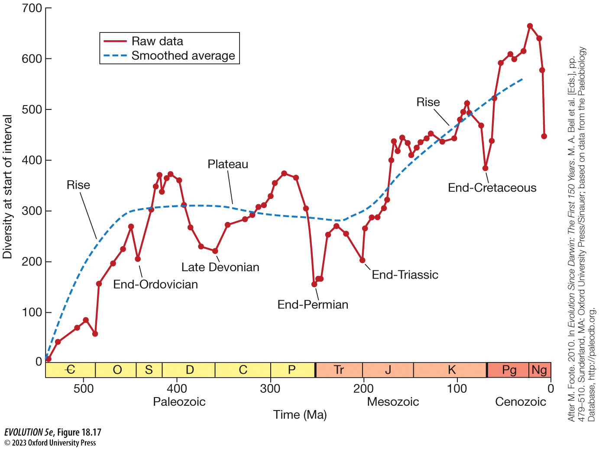
Has the background extinction rate really decreased through time? And if
so, how? Are newer species less prone to extinction than in the past?
Val Valen (1973) measured the length of time that genera persisted throughout
the Phanerozoic and showed that this duration has remained constant.
Lineages have not evolved to become more resistant to extinction!
One explanation for this is termed the Red Queen Hypothesis. It states
that because the selective environment (and thus risk of extinction)
is always changing, it is not possible to become optimally adapted.
Instead, a lineage must continually evolve simply to survive (keep running just to stay in place).
If the duration of lineages (time to extinction) has not changed significantly through time, then how did a global rise in diversity occur through the Phanerozoic?
Niche space has expanded since the Cambrian as organisms themselves
construct new environments that did not previously exist.
The evolution of burrowing, tiering, predation, defense, and many
of other key innovations have created new niches that allow more
species to partition the same limited space.
Does this increase overall diversity? Is there a limit to how much
the environment can be partitioned? Is it always increasing? At what
point does partitioning niches lead to greater extinction?
Niche space has expanded since the Cambrian as organisms themselves construct new environments that did not previously exist.
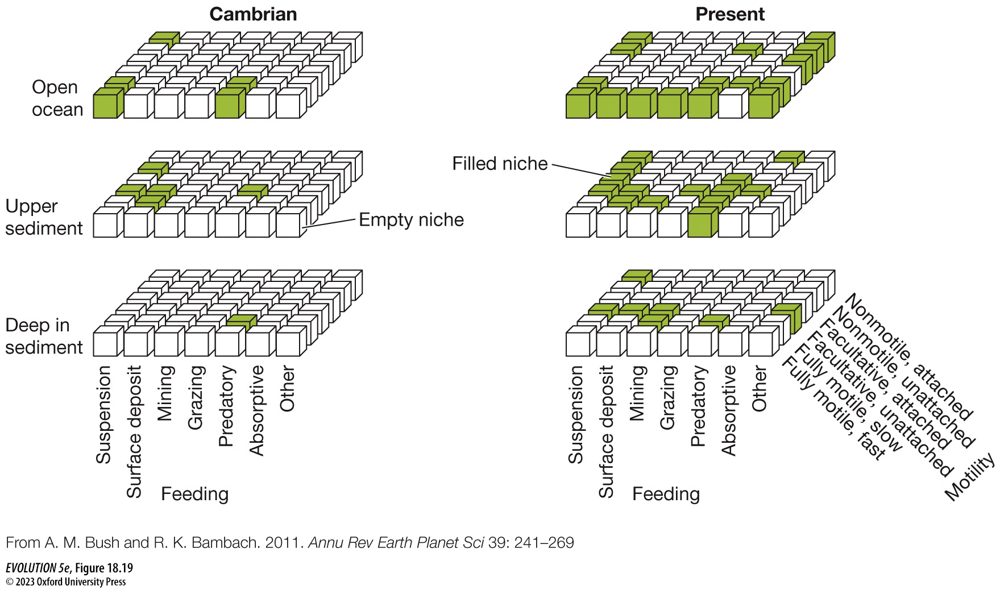
Not only has species diversity changed through time, but so too
has the morphological and ecological disparity of lineages (i.e.,
the number of niches, or ways to live).
Many organisms create their own niche (niche construction). Many
of the ecosystems we observe today did not exist in prior geologic
epochs.
Example: Although forests existed longer, true "Rain forests" are
only <150Mya. Prior to this, the hydraulic efficiency of forest
plants (mostly non-Angiosperm) was not great enough to transpire
the water content to sustain modern rain forests.
In the life of any species, extinction is the final step. All
species eventually go extinct.
Human's have greatly accelerated the rate of extinction, causing
a "Sixth mass extinction".
Extinction risk is highly non-random. Past adaptations that make
some species more or less resistant to human disturbance did not
arise as adaptations to survive humans, rather they arose through
evolution by drift or selection given their everyday toil for
survival and reproduction. So it was the same for other mass
extinctions. Non-randomly, some clades of organisms had adaptations
that by chance made them more likely to survive an unpredictable
event.
As some lineages went extinct others often exploited the open niche space.
The fast rate by which diversity bounces back from mass extinctions, filling
similar niche space, demonstrates the importance of species interactions
as limits on diversity.
Imcumbent lineages can prevent other lineages from diversifying, competitive
replacement is much slower and rarer than the rapid replacement seen after
mass extinctions.
Human's have clearly greatly accelerated species extinctions, but to what extent should we prioritize efforts on preventing extinction, versus protecting habitat/communities/biomes?
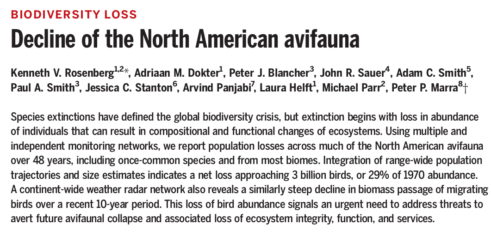
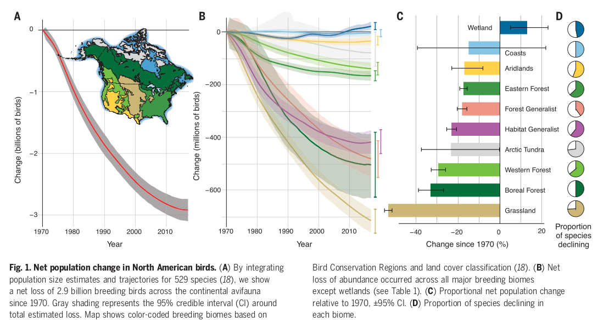